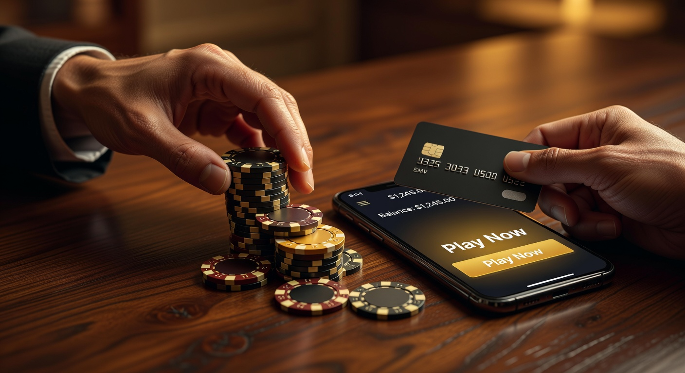
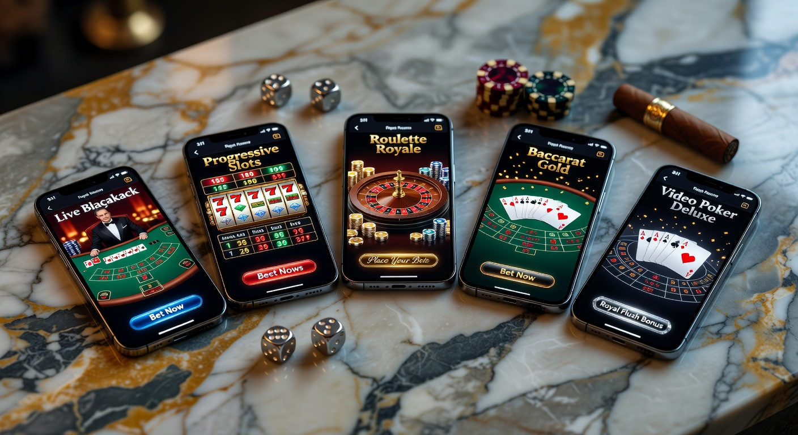
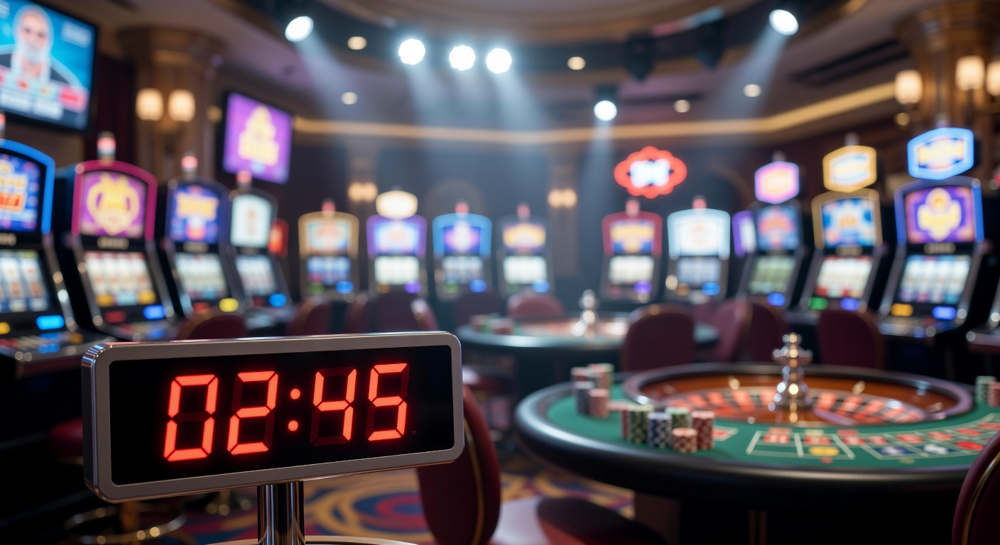
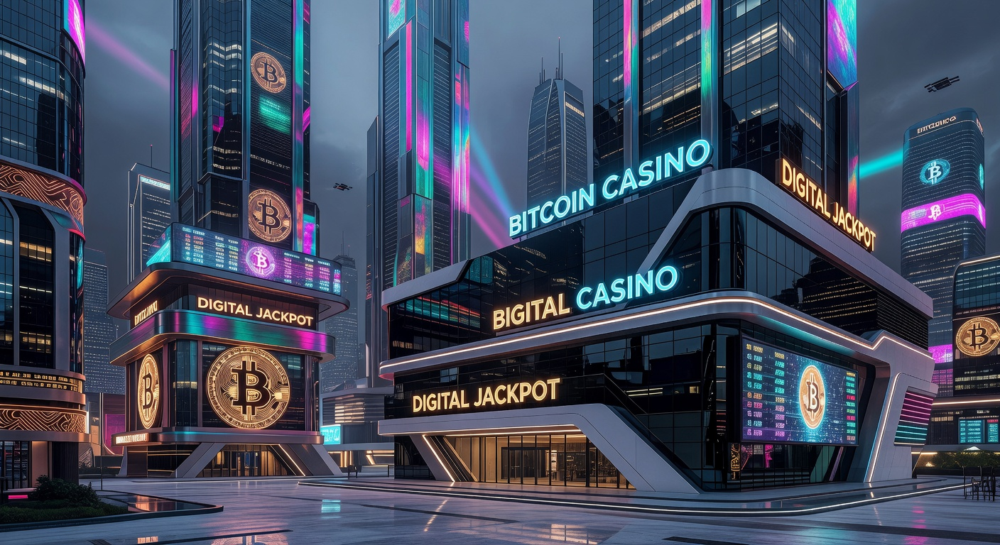
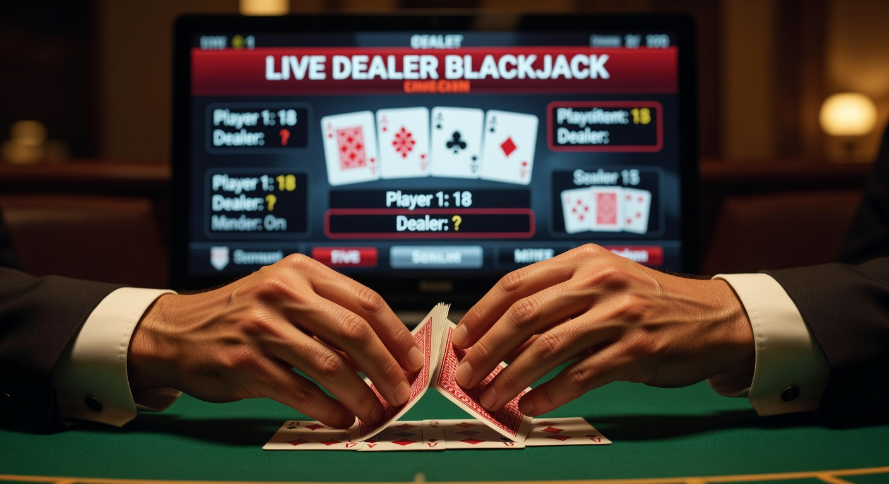

Online casino zonder registratie: Direct gokken zonder account in 2026
De wereld van iGaming heeft in 2026 een enorme transformatie ondergaan. Waar spelers vroeger minutenlang formulieren moesten invullen en documenten moesten uploaden voor verificatie, is het landschap nu gedomineerd door snelheid en efficiëntie. Het online casino zonder registratie is de standaard geworden voor de moderne Nederlandse speler die geen tijd wil verspillen aan bureaucratische processen. In dit uitgebreide artikel duiken we diep in de werking, de voordelen en de beste aanbieders van dit moment.
De opkomst van technologieën zoals Pay N Play 2.0 en verbeterde iDIN-koppelingen heeft ervoor gezorgd dat de drempel om een gokje te wagen lager is dan ooit. Of je nu via je mobiel speelt of via een desktop, de ervaring bij een online casino zonder registratie is naadloos. We bespreken niet alleen hoe je direct kunt beginnen, maar kijken ook kritisch naar de veiligheid en de juridische kaders in Nederland anno 2026.
Wat is een online casino zonder registratie precies?
Een online casino zonder registratie, vaak ook een 'no account casino' genoemd, is een platform waar je kunt gokken zonder dat je handmatig een gebruikersprofiel hoeft aan te maken. In plaats van een traditionele aanmelding met e-mailadres en wachtwoord, wordt je identiteit geverifieerd via je bankrekening of een digitale ID. Dit proces vindt plaats op de achtergrond terwijl je jouw eerste storting doet.
In 2026 maken deze platformen gebruik van geavanceerde API-koppelingen. Wanneer je geld stort bij een online casino zonder registratie, deelt je bank de noodzakelijke KYC-gegevens (Know Your Customer) direct met de operator. Hierdoor voldoe je direct aan alle wettelijke eisen zonder dat je zelf handmatig gegevens hoeft in te voeren. Het is een efficiënte manier om de privacy van de speler te waarborgen en tegelijkertijd te voldoen aan strikte anti-witwasregels.
Het concept is simpel: je komt aan op de website, je klikt op 'storten', je kiest je bank, en je bent klaar om te spelen. Je saldo is gekoppeld aan je bankrekening of cryptowallet, waardoor je de volgende keer dat je de site bezoekt direct weer verder kunt waar je gebleven was. Dit type online casino zonder account heeft de manier waarop wij naar digitale entertainment kijken fundamenteel veranderd.
Hoe werkt het proces van storten en spelen?

Het proces bij een online casino zonder registratie is ontworpen om zo min mogelijk frictie te veroorzaken. In de afgelopen jaren is de technologie achter deze systemen alleen maar sneller en veiliger geworden. Hieronder leggen we de drie cruciale stappen uit die je doorloopt wanneer je besluit bij een dergelijk platform te gaan spelen.
Stap 1: Kies een betrouwbaar platform
De eerste stap is altijd het vinden van een kwalitatief online casino zonder registratie. Onze experts van Betninja raden aan om te letten op de licentie, de beschikbare spellen en de reputatie van de operator. In 2026 zijn er honderden opties, maar slechts een handvol biedt de topservice die je mag verwachten. Kijk naar reviews en vergelijk de verschillende aanbieders voordat je een keuze maakt.
Stap 2: Doe een storting via je bank
Zodra je een keuze hebt gemaakt, navigeer je naar de kassapagina. Hier voer je het bedrag in dat je wilt storten. Bij een online casino zonder registratie gebruik je hiervoor meestal Trustly, iDEAL of Volt. Je wordt doorgeleid naar de beveiligde omgeving van je eigen bank, waar je de transactie autoriseert zoals je dat ook bij een normale webshopbestelling zou doen.
Stap 3: Directe verificatie via iDIN of Trustly
Tijdens de transactie wordt op de achtergrond de verificatie voltooid. Middels iDIN of het Pay N Play-protocol van Trustly worden je naam, leeftijd en adres gecontroleerd. Dit is essentieel voor een veilig online casino zonder registratie, omdat het voorkomt dat minderjarigen kunnen gokken. Zodra de bank de betaling bevestigt, staat het geld direct in je casino-balans en kun je beginnen met spelen.
Beste casino zonder registratie: Onze top 5 selectie

De markt is in 2026 verzadigd met aanbieders, maar er zijn er een paar die er echt bovenuit springen. Deze selectie is gebaseerd op uitgebreid onderzoek door het team van Betninja, waarbij is gekeken naar uitbetalingssnelheid, spelaanbod en bonusvoorwaarden. Hieronder vind je de absolute top voor wie zoekt naar een beste casino zonder registratie ervaring.
| Casino Naam | Belangrijkste Kenmerk | Bonus (2026) | Betaalmethode |
|---|---|---|---|
| Instant Casino | Snelste uitbetalingen | 10% Cashback wekelijks | Trustly & Volt |
| Golden Panda | Beste bonusvoorwaarden | 200% tot €2.000 | iDEAL & Crypto |
| Lucky Block | Nummer 1 voor Crypto | Directe Crypto-stortingen | Bitcoin, ETH, USDT |
| CoinCasino | Grootste Live aanbod | Dagelijkse Free Spins | Crypto & Visa |
| Samba Slots | Gebruiksvriendelijk mobiel | 500 Free Spins | iDEAL & Mastercard |
Elk van deze aanbieders heeft zijn eigen specialiteit. Wat ze echter allemaal gemeen hebben, is dat ze de drempel voor de speler zo laag mogelijk houden. Het concept van een casino zonder registratie wordt hier tot in de puntjes uitgevoerd, met directe toegang tot duizenden gokkasten en live tafelspellen.
Instant Casino – Snelste uitbetalingen in de business

Instant Casino heeft in 2026 de markt veroverd door zich volledig te focussen op één ding: snelheid. Dit online casino zonder registratie begrijpt dat spelers niet willen wachten op hun winst. Waar andere casino's soms uren of dagen nodig hebben om een uitbetalingsverzoek goed te keuren, gebeurt dit bij Instant Casino volledig geautomatiseerd binnen enkele seconden.
Het platform maakt gebruik van de nieuwste Trustly-technologie. Spelers kunnen hier rekenen op een soepele ervaring zonder gedoe. Bovendien biedt Instant Casino een uniek cashback-systeem aan in plaats van een ingewikkelde welkomstbonus met hoge rondspeelvoorwaarden. Dit maakt het een favoriet voor high rollers en serieuze spelers die direct resultaat willen zien bij hun online casino's zonder registratie keuze.
De interface is strak en minimalistisch, perfect voor mobiel gebruik. Of je nu in de trein zit of thuis op de bank ligt, je kunt direct inloggen via je bank en beginnen met spelen. Instant Casino is het toonbeeld van hoe een modern casino zonder account eruit hoort te zien in de huidige tijd.
Lucky Block – Beste crypto casino zonder registratie

Voor de liefhebbers van digitale valuta is Lucky Block in 2026 de absolute marktleider. Dit platform heeft het concept van een online casino zonder registratie naar de blockchain gebracht. Door gebruik te maken van Web3-wallets zoals MetaMask of WalletConnect, kun je binnen één klik verbinding maken en beginnen met spelen.
Bij Lucky Block hoef je geen persoonlijke gegevens te delen. De transacties verlopen via Bitcoin, Ethereum (ETH), Litecoin, of USDT. Dit biedt een niveau van privacy dat bij traditionele banken simpelweg niet mogelijk is. Het is een uitstekend voorbeeld van een beste online casino zonder registratie voor de tech-savvy speler.
Naast de enorme privacyvoordelen biedt Lucky Block ook een spelaanbod dat ongeëvenaard is. Van exclusieve crypto-games tot de bekendste slots van providers als NetEnt en Pragmatic Play. Het is een robuust casino online zonder registratie dat laat zien dat crypto en gokken een gouden combinatie zijn in 2026.
CoinCasino – De koning van het live casino

Als je houdt van de sfeer van een fysiek casino, maar de snelheid van een online casino zonder registratie verlangt, dan is CoinCasino de plek voor jou. Zij hebben zich gespecialiseerd in live dealer games. Denk aan Lightning Roulette, Meeslepende Blackjack-tafels en innovatieve Game Shows die speciaal voor de digitale markt zijn ontwikkeld.
Bij CoinCasino kun je direct aanschuiven aan een tafel zonder eerst een langdurig verificatieproces te doorlopen. Dankzij hun hybride betaalsysteem kun je zowel met euro's via iDEAL als met diverse cryptovaluta storten. Dit maakt het een veelzijdig casino zonder registratie dat een breed publiek aanspreekt.
De streamingkwaliteit bij CoinCasino is in 2026 van 4K-niveau, waardoor het voelt alsof je echt aan de tafel zit. Hun klantenservice staat bovendien 24/7 klaar om te helpen met eventuele vragen, wat essentieel is voor een top-tier casino zonder account ervaring.
Golden Panda – De bonuskoning
Veel mensen denken dat een online casino zonder registratie minder bonussen aanbiedt, maar Golden Panda bewijst het tegendeel. In 2026 staan zij bekend als de 'bonuskoning' van de no-account sector. Hun welkomstpakket is vaak groter dan dat van traditionele casino's, met eerlijke voorwaarden die transparant worden gecommuniceerd.
Wat Golden Panda uniek maakt, is hun loyaliteitsprogramma. Hoewel je geen officieel account aanmaakt in de traditionele zin, onthoudt het systeem je unieke identifier (gekoppeld aan je bank of wallet). Hierdoor spaar je automatisch punten voor elke inzet die je doet bij dit online casino zonder registratie.
Deze punten kunnen worden ingewisseld voor wager-free spins, cash prijzen of exclusieve toegang tot VIP-toernooien. Het is een slimme manier om spelers te belonen zonder de frictie van een registratieformulier. Voor wie op zoek is naar maximale waarde voor zijn geld, is dit het beste casino zonder registratie op de huidige markt.
Samba Slots – Casino zonder account met iDEAL ondersteuning
Voor de Nederlandse markt is Samba Slots een interessante speler. Zij hebben zich volledig aangepast aan de lokale wensen door iDEAL als primaire betaalmethode te integreren in hun no-account model. In 2026 is dit nog steeds de meest gebruikte methode in Nederland, en Samba Slots maakt hier optimaal gebruik van.
Dit online casino zonder registratie richt zich, zoals de naam al zegt, voornamelijk op gokkasten. Met een bibliotheek van meer dan 5.000 titels is er voor ieder wat wils. De integratie van iDEAL zorgt ervoor dat stortingen en uitbetalingen binnen enkele minuten op je rekening staan, wat perfect past bij de filosofie van een casinos zonder registratie.
Bovendien is de site volledig geoptimaliseerd voor de Nederlandse taal en cultuur, wat zorgt voor een vertrouwde omgeving. Samba Slots laat zien dat een online casino zonder account heel goed kan aansluiten bij de specifieke behoeften van een lokale markt.
✅ Voordelen van Casino’s Zonder Registratie
Waarom kiezen steeds meer spelers in 2026 voor een online casino zonder registratie? De redenen zijn divers, maar ze komen allemaal neer op gemak en veiligheid. Hieronder de belangrijkste voordelen op een rij:
- Extreme Snelheid: Je kunt binnen 30 seconden beginnen met spelen. Geen gedoe met e-mails bevestigen of SMS-codes invullen voor registratie.
- Directe Uitbetalingen: Winsten worden vaak binnen minuten op je bankrekening gestort, in plaats van de gebruikelijke 1-3 werkdagen.
- Privacy: Je hoeft geen persoonlijke documenten zoals paspoortkopieën of energierekeningen handmatig te uploaden naar de server van het casino.
- Minder Spam: Omdat je geen e-mailadres of telefoonnummer hoeft achter te laten voor een account, word je niet lastiggevallen met marketingmails of ongewenste telefoontjes.
- Veiligheid: De verificatie gebeurt via de beveiligde omgeving van je bank, wat de kans op identiteitsfraude aanzienlijk verkleint bij een online casino zonder registratie.
Het is duidelijk dat de traditionele manier van registreren langzaam aan het uitsterven is. De moderne consument is gewend aan 'one-click' oplossingen, en de gokindustrie volgt deze trend. Een online casino zonder registratie biedt simpelweg een superieure gebruikerservaring.
Wedden zonder registratie: Sportwedden in 2026
Niet alleen voor slots en tafelspellen is het no-account model populair. In 2026 is wedden zonder registratie op sportevenementen enorm groot geworden. Of het nu gaat om de Eredivisie, de Champions League of niche sporten zoals e-sports; spelers willen direct hun weddenschap kunnen plaatsen als ze een goede kans zien.
Bij een sportsbook dat opereert als een online casino zonder registratie, kun je live wedden terwijl de wedstrijd bezig is, zonder eerst een account te hoeven aanmaken. Dit is vooral handig bij 'in-play' weddenschappen waarbij elke seconde telt. De odds veranderen constant, en door het overslaan van de registratie mis je nooit meer een buitenkansje.
Veel van de top aanbieders, zoals Instant Casino en Lucky Block, hebben een uitgebreide sportsectie geïntegreerd. Hierdoor kun je met hetzelfde saldo zowel een gokje wagen op een gokkast als een weddenschap plaatsen op je favoriete team. Dit type online gokken zonder registratie is de toekomst van sportentertainment.
Online Gokken Zonder Registratie: De technische revolutie
De techniek achter online gokken zonder registratie is in 2026 complexer en veiliger dan ooit. De kern van dit systeem is de uitwisseling van data via beveiligde protocollen. Wanneer een speler een storting doet, fungeert de betaalprovider als een vertrouwde tussenpersoon die de identiteitsgegevens valideert.
Een belangrijke speler hierin is iDIN, een dienst ontwikkeld door Nederlandse banken. Het stelt gebruikers in staat om zich bij organisaties te identificeren met de vertrouwde inlogmiddelen van hun eigen bank. In een online casino zonder registratie zorgt dit ervoor dat de operator direct weet dat de speler 18 jaar of ouder is en niet in een uitsluitingsregister staat.
Daarnaast zien we de opkomst van kunstmatige intelligentie die het gedrag van spelers monitort om gokverslaving te voorkomen, zelfs zonder dat er een permanent accountprofiel is. De data wordt gekoppeld aan de unieke bank-ID, waardoor verantwoord spelen gewaarborgd blijft. Dit maakt online gokken zonder account niet alleen sneller, maar in veel opzichten ook veiliger dan de oude systemen.
Is een online casino zonder registratie legaal in Nederland?
De legaliteit van een online casino zonder registratie in Nederland is een onderwerp dat in 2026 nog steeds veel aandacht krijgt. Sinds de opening van de online kansspelmarkt in 2021 zijn de regels streng. Voor een casino om legaal te opereren, moet het een vergunning hebben van de Kansspelautoriteit (Ksa).
Hoewel de Ksa strikte regels stelt aan de identificatie van spelers, verbieden zij het principe van een online casino zonder registratie niet, mits de verificatie aan alle eisen voldoet. In de praktijk betekent dit dat veel legale Nederlandse aanbieders nu iDIN gebruiken om het registratieproces zo kort mogelijk te maken, waardoor ze bijna als 'no-account' casino's functioneren.
Er zijn echter ook veel buitenlandse aanbieders die hun diensten aanbieden aan Nederlanders. Hoewel deze vaak een licentie hebben in Malta (MGA) of Curaçao, worden zij door de Ksa als illegaal beschouwd als ze zich specifiek op de Nederlandse markt richten zonder lokale licentie. Het is voor spelers belangrijk om het onderscheid te kennen tussen een casino zonder registratie met een KSA-licentie en een buitenlandse aanbieder.
De rol van de Kansspelautoriteit (Ksa)
De Kansspelautoriteit (Ksa) heeft als hoofddoel het beschermen van de consument, het voorkomen van gokverslaving en het bestrijden van illegaliteit. Zij zien erop toe dat elk online casino zonder registratie dat in Nederland actief is, voldoet aan de Wet Kansspelen op Afstand (Wok). Dit houdt in dat er een actieve controle moet zijn op CRUKS (Centraal Register Uitsluiting Kansspelen).
Verschillen tussen CRUKS en buitenlandse licenties
Het grootste verschil tussen een Nederlands online casino zonder registratie en een buitenlandse variant is de aansluiting bij CRUKS. Als je in dit register staat, kun je bij geen enkel legaal Nederlands casino spelen. Buitenlandse casino's (vaak aangeduid als casino's zonder CRUKS) hebben geen toegang tot deze database. Hoewel dit voor sommige spelers een reden is om daar te spelen, brengt het grotere risico's met zich mee wat betreft spelersbescherming.
Beschikbare betaalmethoden voor directe toegang
In een online casino zonder registratie draait alles om de betaalmethode. Zonder een snelle en veilige manier om geld over te maken, kan het concept niet bestaan. In 2026 zijn er drie hoofdcategorieën die de dienst uitmaken.
Pay N Play (Trustly)
Trustly is de grondlegger van het no-account principe. Hun Pay N Play-technologie is in 2026 de gouden standaard voor online casino's zonder registratie in heel Europa. Het combineert de storting en de verificatie in één enkele handeling, wat zorgt voor een ongeëvenaarde snelheid.
Cryptovaluta en Volt
Naast Trustly zien we een enorme groei in het gebruik van Bitcoin, Ethereum, en USDT. Platforms zoals Lucky Block en CoinCasino maken hier gebruik van. Volt is een andere opkomende speler die directe bankbetalingen mogelijk maakt via open banking API's, vergelijkbaar met iDEAL maar dan op een pan-Europese schaal. Dit is ideaal voor een online casino zonder registratie dat internationaal opereert.
iDEAL
Voor de Nederlandse markt blijft iDEAL de onbetwiste leider. In 2026 is iDEAL volledig vernieuwd en biedt het nu ook mogelijkheden voor directe uitbetalingen en automatische identiteitsverificatie in samenwerking met banken. Veel beste casino's zonder registratie in Nederland integreren iDEAL om vertrouwen te wekken bij de lokale speler.
Hier letten onze online casino experts op
Het team van Betninja test wekelijks tientallen platforms. Bij het beoordelen van een online casino zonder registratie hanteren wij strikte criteria. Wij kijken verder dan alleen de oppervlakte om te garanderen dat onze lezers veilig kunnen spelen.
- Licentieverificatie: We controleren of de licentie van de operator nog geldig is en of deze een goede reputatie heeft bij toezichthouders.
- Snelheidstests: We storten en laten geld uitbetalen om te verifiëren of het casino zijn belofte van 'instant' betalingen echt nakomt. Een goed online casino zonder registratie mag nooit langer dan een paar uur over een uitbetaling doen.
- Spelaanbod: We kijken naar de aanwezigheid van top-providers zoals Evolution Gaming, NetEnt en Microgaming. Een casino zonder account moet kwalitatief niet onderdoen voor een traditioneel casino.
- Klantenservice: We testen de reactiesnelheid van de live chat. In een omgeving zonder accounts is goede ondersteuning extra belangrijk als er iets misgaat met een transactie.
- Mobiele Ervaring: Aangezien meer dan 80% van de spelers in 2026 via hun telefoon speelt, moet de mobiele site of app vlekkeloos werken bij elk online casino zonder registratie dat wij aanbevelen.
Bonussen en promoties bij no account aanbieders
Het is een fabeltje dat je bij een online casino zonder registratie geen gebruik kunt maken van bonussen. Sterker nog, de promoties zijn in 2026 vaak innovatiever. Omdat er minder administratieve rompslomp is, kunnen casino's meer budget uittrekken voor hun spelers.
De welkomstbonus is nog steeds de populairste lokker. Dit kan variëren van een stortingsbonus van 200% tot honderden gratis spins op populaire slots zoals Starburst 3. Daarnaast zien we bij Golden Panda en Instant Casino veel focus op cashback. Een cashback bonus houdt in dat je een percentage van je verliezen terugkrijgt, vaak zonder dat hier rondspeelvoorwaarden aan verbonden zijn. Dit past perfect bij de 'geen gedoe' mentaliteit van een online casino zonder registratie.
Ook de no deposit bonus komt nog wel eens voor, waarbij je een klein bedrag aan speelgeld krijgt puur voor het koppelen van je bankrekening via iDIN. Dit is een geweldige manier om een casino online zonder registratie uit te proberen zonder zelf risico te lopen.
Veiligheid en verantwoord spelen waarborgen
Veiligheid is de hoogste prioriteit in 2026. Een online casino zonder registratie moet gebruikmaken van SSL-encryptie om alle dataverkeer te beveiligen. Bovendien moeten ze samenwerken met onafhankelijke testinstanties zoals eCOGRA om aan te tonen dat hun spellen eerlijk verlopen via een Random Number Generator (RNG).
Wat betreft verantwoord gokken, zijn er in 2026 strengere regels. Elk legitiem online casino zonder registratie moet tools aanbieden waarmee spelers hun eigen limieten kunnen instellen. Denk aan stortingslimieten, tijdslimieten en verlieslimieten. Hoewel je geen traditioneel account hebt, worden deze limieten gekoppeld aan je bank-ID of wallet-adres.
Het is essentieel dat spelers zich bewust blijven van de risico's van online gokken. Instant toegang bij een online casino zonder account kan het risico op impulsief gedrag vergroten. Daarom raden wij altijd aan om alleen te spelen met geld dat je kunt missen en om regelmatig pauzes in te lassen. Instanties zoals het Loket Kansspel bieden ondersteuning aan spelers die hun gokgedrag niet meer onder controle hebben.
Klantenservice en ondersteuning
Een aspect dat vaak over het hoofd wordt gezien bij een online casino zonder registratie is de klantenservice. Juist omdat er geen traditioneel accountbeheer is, moet de ondersteuning top-notch zijn. In 2026 maken de beste casino's gebruik van hybride systemen: AI-gestuurde chatbots voor simpele vragen en deskundige menselijke medewerkers voor complexere zaken.
De meeste top-aanbieders zoals Instant Casino en Samba Slots bieden 24/7 live chat ondersteuning aan. Dit is cruciaal, want als een storting niet direct zichtbaar is of een spel vastloopt, wil je direct geholpen worden. Bij een online casino zonder registratie is je banktransactienummer je belangrijkste referentiepunt bij contact met de klantenservice.
Wij adviseren spelers om altijd even de live chat te testen voordat ze een grote storting doen. Stuur een simpele vraag en kijk hoe snel en professioneel er wordt geantwoord. Dit geeft een goed beeld van de betrouwbaarheid van het beste casino zonder registratie van jouw keuze.
Conclusie: De toekomst van online gokken
Het online casino zonder registratie heeft in 2026 bewezen geen tijdelijke trend te zijn, maar een blijvende revolutie in de gokindustrie. De combinatie van snelheid, privacy en veiligheid sluit perfect aan bij de wensen van de moderne speler. Of je nu kiest voor de razendsnelle uitbetalingen van Instant Casino, de crypto-geoptimaliseerde omgeving van Lucky Block, of de vertrouwde iDEAL-ervaring bij Samba Slots, de mogelijkheden zijn eindeloos.
De rol van de Kansspelautoriteit (Ksa) blijft essentieel om de markt gezond te houden, terwijl technologische innovaties zoals Pay N Play en iDIN het proces blijven verfijnen. Online gokken zonder registratie is eenvoudiger dan ooit, maar het vereist ook een grotere verantwoordelijkheid van de speler zelf. Door te kiezen voor betrouwbare platforms die zijn goedgekeurd door experts zoals die van Betninja, ben je verzekerd van een eerlijke en plezierige ervaring.
In de nabije toekomst verwachten we dat nog meer traditionele casino's de overstap zullen maken naar een no-account model of op zijn minst een hybride vorm zullen aanbieden. Het gemak van een online casino zonder registratie is simpelweg te groot om te negeren. De dagen van lange formulieren en dagenlang wachten op je geld liggen definitief achter ons.
Veelgestelde vragen over casino’s zonder registratie
Hieronder beantwoorden we de meest voorkomende vragen die spelers in 2026 hebben over het fenomeen van het online casino zonder registratie.
Is een casino zonder registratie veilig?
Ja, mits je speelt bij een aanbieder met een erkende licentie. Deze casino's maken gebruik van de beveiligingsprotocollen van banken (zoals iDIN of Trustly), wat vaak veiliger is dan het handmatig invoeren van je gegevens op een website.
Hoe weet het casino wie ik ben zonder account?
Bij een online casino zonder registratie wordt je identiteit gekoppeld aan je unieke bankrekeningnummer of cryptowallet-adres. Wanneer je opnieuw stort of de site bezoekt, herkent het systeem je aan deze unieke identifier, waardoor je saldo altijd veilig blijft staan.
Kan ik een welkomstbonus krijgen bij een online casino zonder registratie?
Zeker! Aanbieders zoals Golden Panda en Mega Dice staan bekend om hun royale bonussen voor nieuwe spelers. De bonus wordt direct aan je saldo toegevoegd zodra je jouw eerste storting via de no-account methode voltooit.
Wat is het beste casino zonder registratie in 2026?
Dit hangt af van je persoonlijke voorkeur. Voor snelheid raden we Instant Casino aan. Voor crypto-liefhebbers is Lucky Block de beste keuze, en voor wie van veel slots houdt is Samba Slots een uitstekende optie.
Zijn uitbetalingen echt direct bij een online casino zonder account?
In de meeste gevallen wel. Bij een online casino zonder registratie wordt de uitbetaling vaak automatisch goedgekeurd en via het SEPA Instant Credit Transfer netwerk verwerkt, waardoor het geld binnen seconden op je rekening staat.

Expert in online casino's en digitaal gokken met meer dan 8 jaar ervaring in de sector.